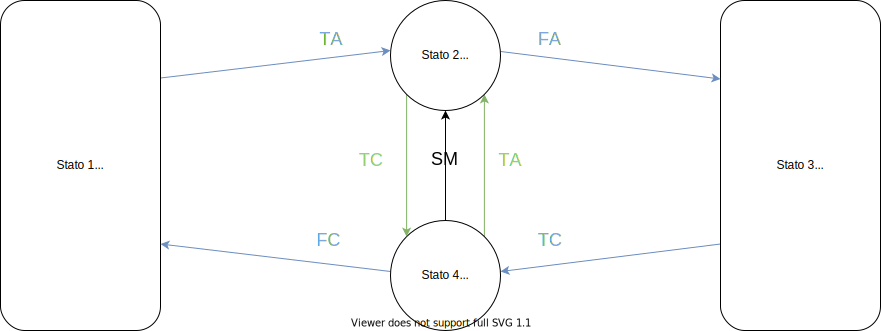
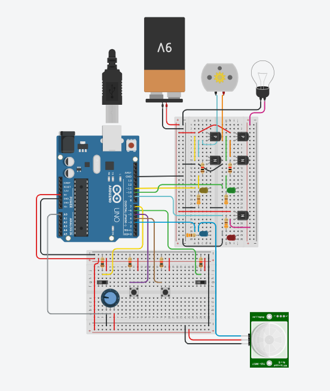

Francesco Levorin,
laboratorio di sistemi 4EB
Cancello Automatico
scopo dell'esperienza
Lo scopo dell'esperienza è realizzare il firmware di un cancello automatico capace di evitare possibili ostacoli, di regolare la velocità, e di segnalare il movimento attraverso il lampeggio di una lampada.
componenti utilizzati
| Quantità | Componente | Variante |
|---|---|---|
| 1 | Arduino | UNO |
| 3 | Transistor | NPN (BJT) |
| 2 | Transistor | PNP (BJT) |
| 1 | Batteria | 9 volt |
| 1 | Led | Verde |
| 1 | Led | Rosso |
| 1 | Led | Giallo |
| 1 | Led | Blu |
| 1 | Lampadina | |
| 1 | Sensore | Fotocellula |
| 1 | Motore | CC |
| 4 | Resistenza | 330 Ohm |
| 6 | Resistenza | 1 KOhm |
| 2 | Interruttori | Scorrimento |
| 2 | Pulsanti | |
| 1 | Potenziometro | 250 KOhm |
è importante precisare che in questo ambito sperimentale gli interruttori a scorrimento sono utilizzati come se fossero i finecorsa. Inoltre i led sono stati messi per verificare il corretto funzionamento degli output
cenni teorici
Il funzionamento del cancello si può schematizzare attraverso il seguente diagramma:
| Abbreviazione | Significato |
|---|---|
| TC | Tasto chiusura |
| TA | Tasto apertura |
| FC | Finecorsa cancello chiuso |
| FA | Finecorsa cancello aperto |
| SM | Fotocellula |
Come si può osservare dal diagramma, il programma segue lo schema della macchina a stati finiti di Moore, infatti l'output dipende dallo stato.
schema del circuito
spiegazione del codice
Prima di ogni funzione ci sono le direttive per il preprocessore (quelle che iniziano per #) define, per associare un nome ad un numero di pin. Di seguito troviamo le creazioni dei tipi di variabile stati e stati_lampada, seguiti dalle dichiarazioni delle variabili.
Il programma è diviso principalmente da due funzioni, setup e loop, predefinite dell'Arduino.
La prima viene eseguita quando l'Arduino viene acceso o resettato, nella quale appunto vengono inserite le operazioni da compiere all'inizio, come in questo caso la definizione dell'utilizzo di ogni pin (input o output), l'assegnazione dello stato iniziale (chiuso e spento) e infine l'assegnazione del valore iniziale di velocità dettato dal potenziometro.
Successivamente troviamo la funzione loop, la quale è un ciclo che dura per tutto il periodo di accensione del microcontrollore. Nel loop si trovano due switch per ogni uscita, ovvero due per comandare il motore e due per comandare la lampada.
Si utilizzano gli switch perché è la corrispondenza più prossima alla macchina a stati finiti nel linguaggio C. Infatti il primo switch e il secondo sono reciprocamente per il motore e per la lampada, attivati solo in caso si debbano effettuare azioni negli output (difatti sono contenuti dentro degli if che controllano la variabile booleana isActionRequired e isActionRequiredl).
Infine gli ultimi due switch vengono raggiunti ogni iterazione del loop, e dettano quando cambiare stato e quindi output, rendendo vere le variabili isActionRequired o isActionRequiredl.
Il codice è inoltre commentato per facilitare la comprensione